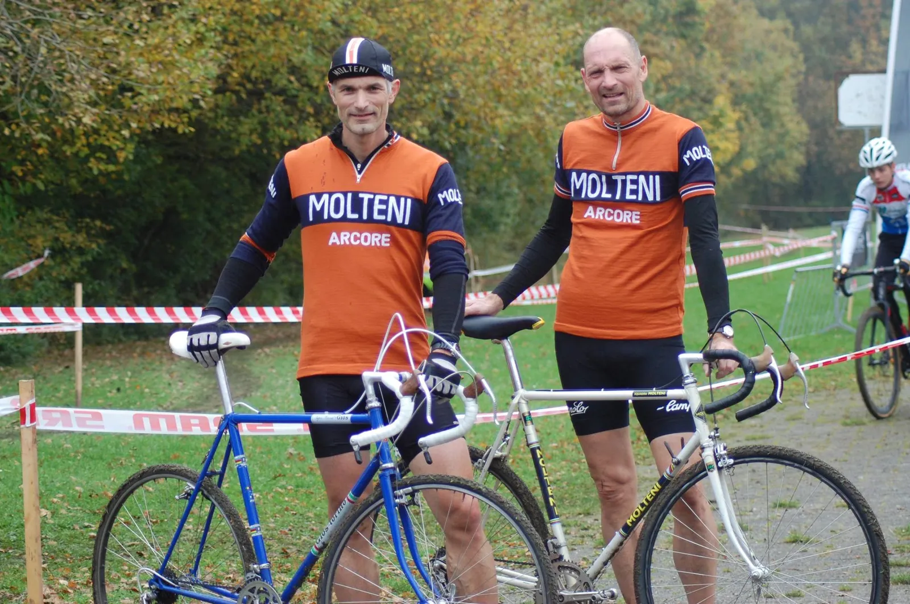

Løbsberetning: Aarhus Cross Post Cup

Niels Bjørnsteen og Grane Wunderbein Maaløe stillede til start ved Aarhus Cross Post Cup i den åbne motionsklasse.
De orange uldtrøjer var nyvaskede og stålcyklerne klar til at fræse græs og grusstier.
Det blev til et god løb.
Grane gav den godt med gas – og kørte sig til en 13. plads.
Niels fik presset stålet i bund – og klemte sig ind på en 7. plads.
En fantastisk dag på cross’erne – og vildt god træning.
Flere fotos fra Aarhus Cross Post Cup
